PhuocHaiTu/T.P.HoChiMinh
玉皇上帝寺/ホーチミン
ホーチミンの北にある玉皇上帝寺は道教寺院である。
めっちゃ下町の通りに面してこの寺院はある。
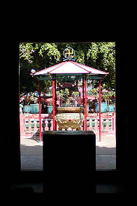 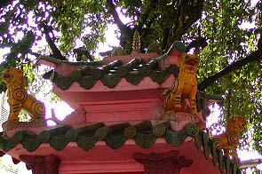
入ると正面には小さいながらも林家ペー級のどピンク色の祠や金の香炉などがあり、徐々に気分を盛り上げてくれる。
っていうか色彩感覚を麻痺させてくれる。
1909年に広東人が建てた玉皇殿との額が掲げられたピンク色の本殿がある。額の上の屋根飾りなど本格的な道教寺院の風情だ。
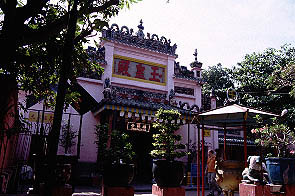
中に入ってみるとホーチミンには珍しい古式然とした佇まい・・・と思ったが。
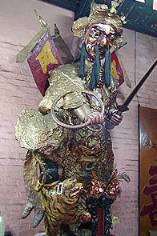 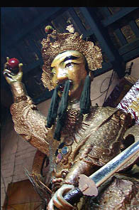
何じゃ君達は〜！！
入って左右に構えるお方。特に左のお方、顔壊れちゃってませんかあ？
奥に行くと本尊の玉皇上帝なのだろか？こちらに屈みこんでいる。
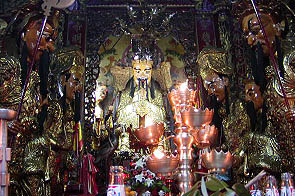
見れば左右の取り巻きの方々も前屈み。物凄い圧迫感である。
本尊の前で拝んでいる人と一緒に座り込んでみた。
薄暗い堂内に線香の煙がもうもうと立ちこめていてその向こうに肝臓の悪そうな顔色の人達が並ぶ。
おおお、ますます凄い圧迫感。押しつぶされそうだ。勉強不足でよく判らないが玉皇上帝ってどこかの皇帝かなんかなのだろう。実際に皇帝の前に座るというのはこんな感じなのだろうか。おお。恐ろしや。
神像なのだろうがお顔ツヤツヤ。しかも良く見ると人形劇に出てくる人形みたいじゃないですか。仰ぎ見ると今にもカクカク動きそうでコワイ。
100年前からこんなモノをまつっていたのだろうか。お化け屋敷みたいだぞ。
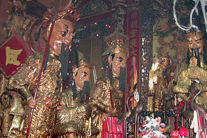 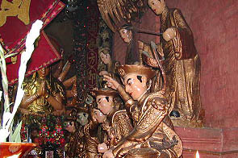
鬚を生やして槍のようなモノを持った人達に混じって観音様などがいる。この辺道教と仏教の混合が見られる。
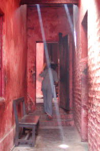
本殿の右手から外に出ると通路のようなところに出る。反対側にはもうひとつお堂がある。奥に行ってみるとおばちゃんが洗濯をしていてめっちゃローカルな生活空間でした。
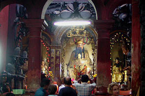 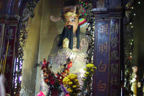
で、本殿の左手にある十獄殿。地獄堂みたいなものだ。どういうわけかこの寺にはヨーロッパ系の観光客が多かった。
ロンリープラネット辺りでは大プッシュの寺なのだろうか。確かに私がベトナムで訪れて来たペンキ塗りコンクリート造全開の寺に比べてすっごくアジアな雰囲気を感じる事ができる寺だとは思う。ベトナムらしいのかといえば、モロ中国の道教寺院なのだが。ま、隣にいたドイツ人の団体さんなどは喜んでいたからいいんですけど。
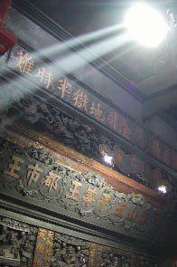
十獄殿の壁面は地獄絵図のレリーフで埋め尽くされていた。
煙りで黒く燻された木彫のレリーフが歴史を感じさせるが、モチーフは地獄図というアンバランスさ。
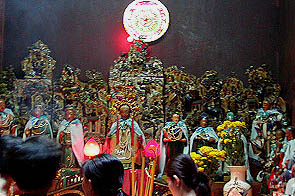 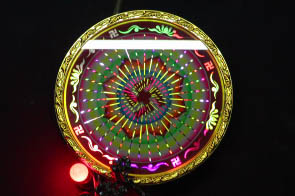
隣の部屋にはそれまでと芸風の違う像が並んでいる。後ろに電飾光背のようなものが掛けられている。
あっ、卍マークが。ここは仏教の部屋だったのか。
一通り参拝したあとまた外に出る。前庭の一画には池がある。中を覗いてみると、
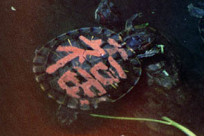 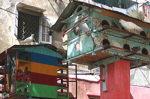
ぐえっ。亀の甲羅に思いっきりペンキで福の字が。本殿を塗ったペンキの余りで書いたのか？同じ色だぞ。
その他やけに派手な鳩小屋があったりしてナイスな寺でした。
次へいきましょう
越南珍寺劇場
珍寺大道場 HOME